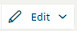

Removing Devices from Groups
In Device View there are various ways of removing devices from their groups. When a device is removed from its group it becomes unassigned. Empty groups are automatically removed.
Remove a Single Device from its Group
- On the device tile, select and then select Remove from Group.
- The device is removed from its group, and becomes unassigned.
Remove Some Devices from a Group
- On the group tile, select and then select Manage Group.
- A dialog box shows the current members of the group.
- Deselect the check boxes alongside the devices you want to remove.
- Select Save.
- The deselected devices are removed from the group and become unassigned.
Remove All Devices from a Group
- On the group tile, select and then select Delete.
- The group is removed, and all its member devices become unassigned.
Remove All Devices from Multiple Groups
- Select

and select Delete groups. - A dialog box lists the current groups in Device View.
- Select the groups you want to remove and select Save.
- The selected groups are removed, and their member devices become unassigned.